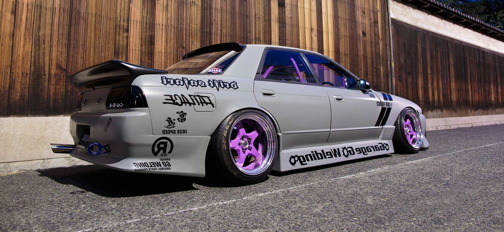
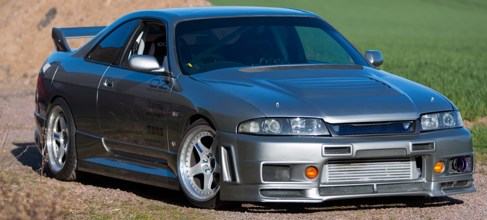
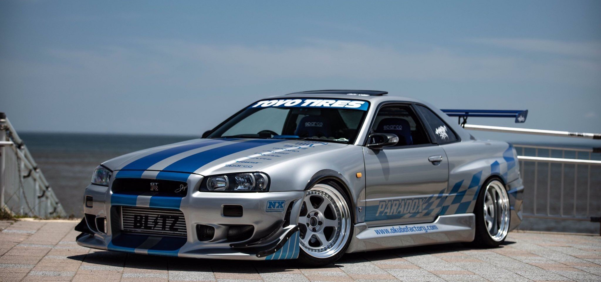

Nissan Skyline GT-R
Nissan Skyline — автомобиль, выпускаемый в Японии с 1957 года, сначала фирмой Prince Motor Company, а затем концерном Nissan Motor, купившим Prince в 1966 году. К настоящему времени выпущено 13 поколений этого автомобиля. Настоящим успехом оказалось возвращение в 1989 году версии GT-R (BNR32), спроектированной в соответствии с требованиями FIA для гоночных автомобилей Группы А. Она была оснащена электронной системой полного привода 4WD ATTESA ETS. Её особенностью являлось то, что при появлении пробуксовки задних колес, подключались передние колеса, которым передавалось около 50 % крутящего момента, что позволяло компенсировать потери при пробуксовке. В основе же автомобиль оставался заднеприводным. Система HICAS, получившая приставку Super, была модернизирована и управлялась уже с помощью электроники. 6-цилиндровый мотор RB26DETT объёмом 2.6 литра имел две турбины. Одержав в кольцевом чемпионате JTCC 29 побед в 29 гонках, выиграв 4 чемпионата подряд с 1990 по 1993 годы и поставив новый рекорд времени прохождения Северной петли Нюрбургринга для серийных машин, автомобиль доказал своё превосходство.
Nissan Skyline R32 GT-R
Nissan Skyline R33 GT-R
Nissan Skyline R34 GT-R
